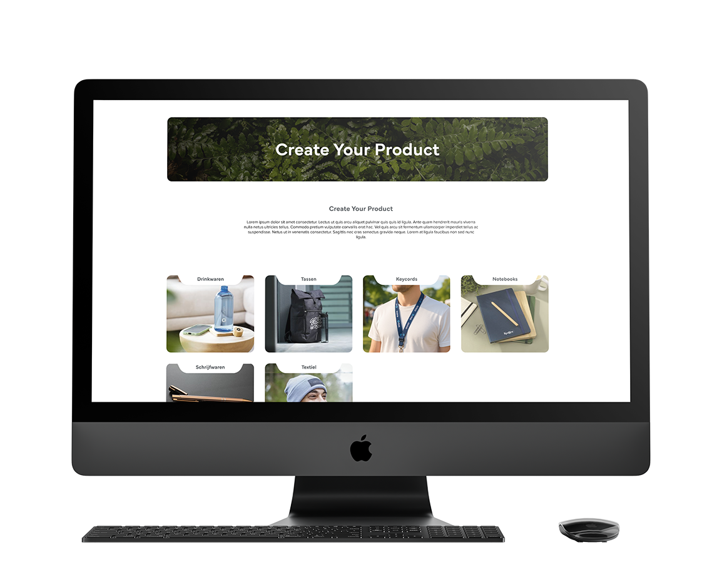
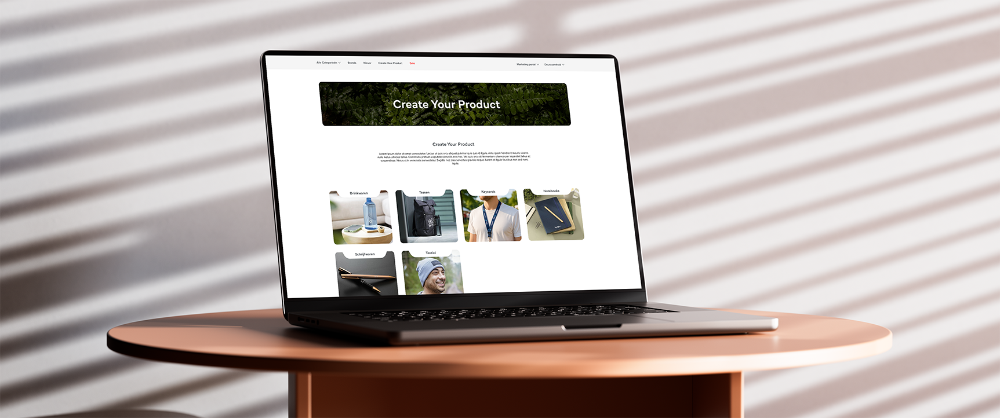
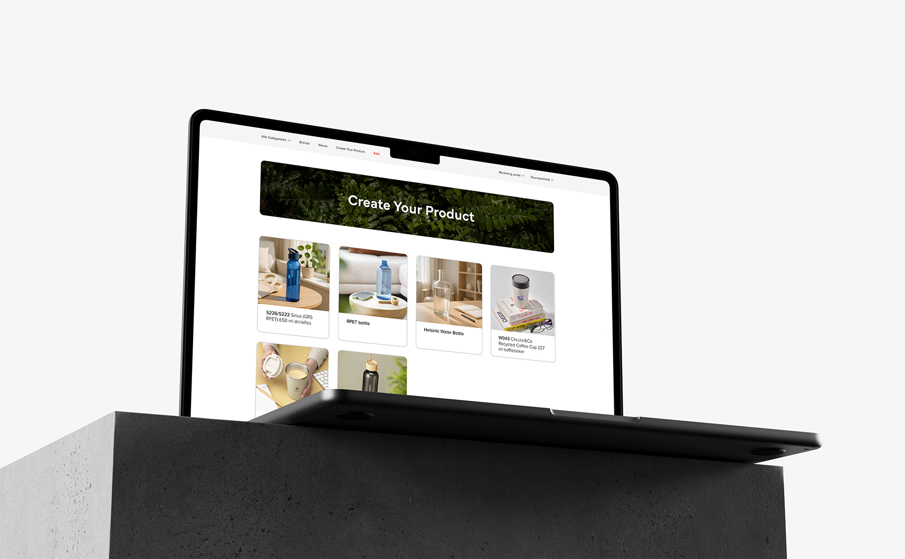
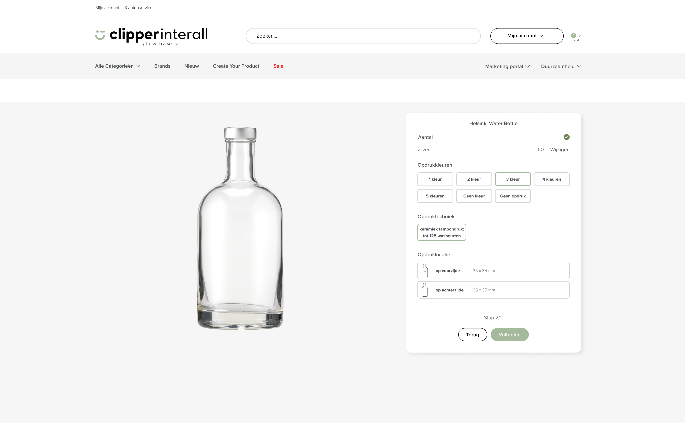
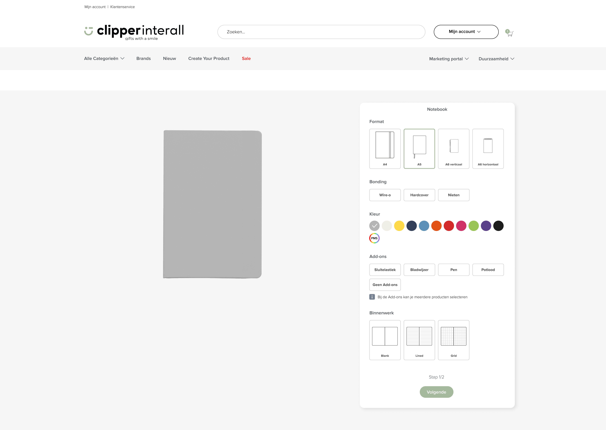
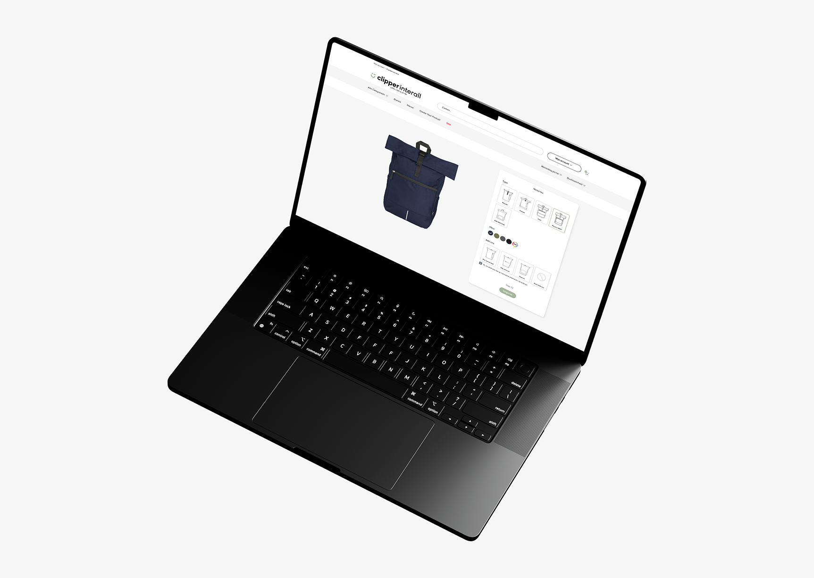

Create Your Product
Onderzoek, concepting, wireframing en design - 2025

Onderzoek, concepting, wireframing en design - 2025

Eens in de zoveel tijd wordt er een marktonderzoek gedaan, om up to date te blijven over onze concurrenten en de huidige trends. Aan mij is de taak gegeven om een paar keer per jaar een marktonderzoek te doen en vervolgens nieuwe ideeën te bedenken, die toegepast kunnen worden op de Clipper Interall website.

Uit één van de marketingonderzoeken kwam naar voren dat meerdere
concurrenten de optie geven aan de klant, om bepaalde artikelen te
kunnen personaliseren. Daarnaast is het personaliseren van een
product altijd in trek bij klanten, omdat het keuzestress vermindert
en ze precies kunnen selecteren wat ze willen. Deze bevinding heb ik
gepresenteerd aan de brandmanager en vanuit hem is de vraag: Hoe
kunnen wij een personalisatie tool voor onze producten op de markt
brengen, die uniek is op zijn eigen manier.
Als eerste ben ik gaan kijken naar concurrenten en
verschillende andere merken die een personalisatie tool aanbieden.
Wat kunnen klanten personaliseren, hoe ziet de personalisatie tool
eruit en wat zouden wij kunnen meenemen en verbeteren? Uit dat
onderzoek kwamen de volgende punten die meegenomen werden naar het
design proces:
1. Er moet een personalisatie configurator komen, waar je
bepaalde producten kunt personaliseren.
2. De klant
moet met een knop vanuit de Productpagina naar het personaliseer
portaal kunnen navigeren.
3. Er moet een aparte
landingspagina komen met informatie en productcategorieën. Deze
lijden ook naar pagina’s met alle beschikbare producten per
categorie.
Om onze personalisatie tool eruit te laten
springen, heb ik ervoor gekozen om een product configurator te
maken. Zodat de klant meteen het eindproduct te zien krijgt in de
configurator.

Met deze informatie is de wireframe fase gestart. Meteen wist ik dat ik een soort portaal op de website wilde maken, waar klanten met visuele ondersteuning hun product kunnen kiezen. Dit had de werknaam Create Your Product gekregen. Vanuit daar zijn er een aantal iteraties gemaakt voor voornamelijk de product configurator. Daarnaast zijn er verschillende bespreking momenten geweest met de category manager en inkoopmanager over welke specificaties de klant kan kiezen bij elke productcategorie. Met al deze besprekingen, schetsen en wireframes kon het ontwerpen beginnen.




Op het Create Your Product portaal zien klanten bepaalde producten die geselecteerd zijn om te personaliseren. Vervolgens komen ze in de product configurator. De configurator heeft twee stappen, de eerste geeft de klant alle productopties (kleur en andere specificaties). Bij de tweede stap kan de klant de gewilde opdruk kiezen voor het product. Uiteindelijk is er een eerste prototype gemaakt voor het Create Your Product project, waarin ik mijn leidinggevende een goed beeld heb gegeven over hoe de configurator eruit moest komen te zien.
PREV